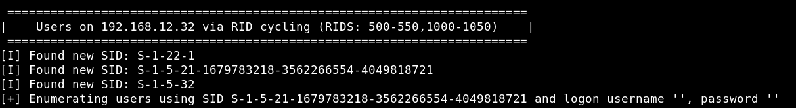
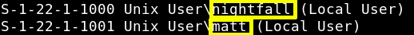

3.2 Samba
Let's see the Samba Service with “Enum4linux”.
Enum4linux is a tool for enumerating information from Windows and Samba systems.It is written in
Perl
and is basically a
wrapper
around the Samba tools smbclient, rpclient, net and nmblookup.
$ enum4linux 192.168.12.32
Output:


There are 2 users “nightfall” and “matt”.
Index